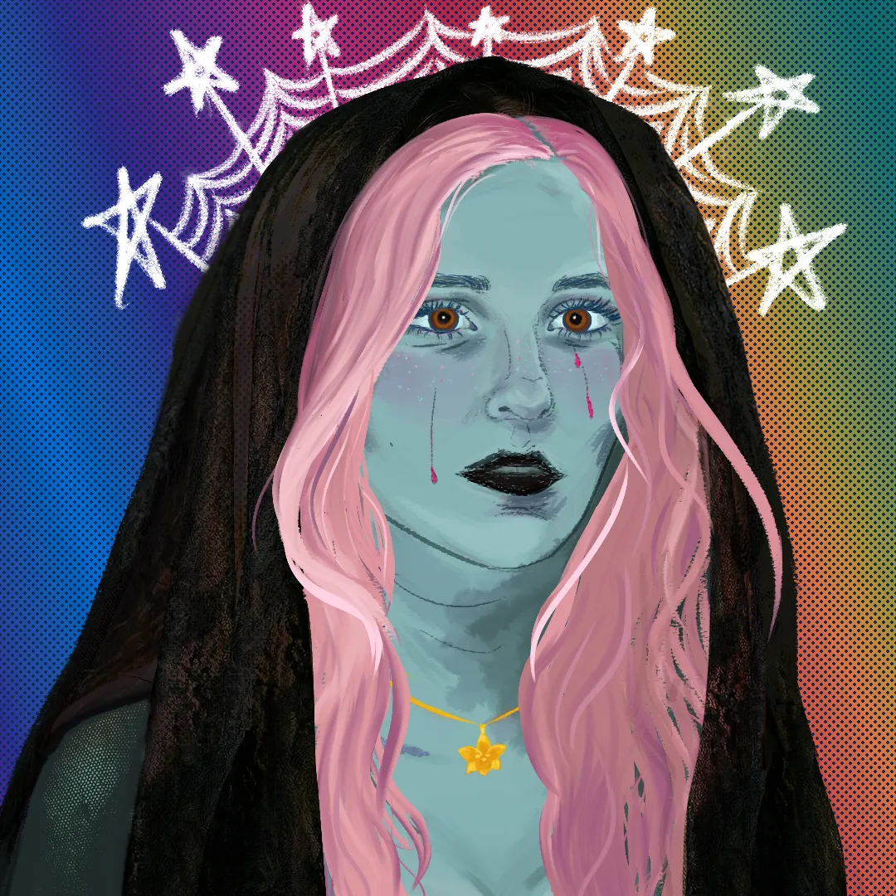

Ren McKinnell est une artiste et développeuse de contenu numérique trilingue basée à Paris.
Sa perspective profondément multiculturelle s'est forgée à San Diego, en Californie aux portes du Mexique, au confluent de ses racines franco-canadiennes.
Elle a obtenu sa Licence en langues étrangères (français et espagnol), se hissant dans le top 1% de sa promotion, une réussite complétée par le prix « Coup de Cœur » de la mairie de Marseille, reçu pour une lecture théâtrale lors de la Semaine de la Francophonie. Par la suite, elle a passé un an à Bogotá pour y enseigner l'anglais. C'est lors de son Master 1 à l'ESSCA que la découverte de la programmation a provoqué un véritable déclic. Elle a alors choisi de pivoter vers le Master 2 CAWEB de l'Université de Strasbourg : suivi à distance, ce cursus lui permet de conjuguer une formation technique de pointe avec son développement professionnel à Paris.
Aujourd'hui superviseuse chez Runaway Games, elle gère des projets marketing et de revue vidéo, une expérience qui renforce sa vision stratégique du numérique. Pour Ren, la localisation est une ingénierie globale qui fusionne le design d'interface UI/UX, l'architecture du code et l'adaptation culturelle. Son objectif est de bâtir des passerelles technologiques fluides et universellement accessibles.